道具引导：时机、优先级与反馈
不只定义道具效果，也规定何时提示、提示持续多久、操作后如何退出提示。
- 依次检查道具使用状态，避免多个引导同时抢占注意力。
- 把提示、点击、实际效果和气泡关闭连接为完整交互。
01 / 制作任务档案 · PROJECT 01
从零组队推进项目，独立使用 Codex 一周完成核心玩法与表现原型；负责玩法与系统、版本交付，推进微信和抖音上线及第二版测试。
任职角色沿用履历记录；具体贡献按项目资料区分，共同职责不逐项归为单个项目的独立成果。
GAMEPLAY / 运行画面
本人提供的截图与录屏 · 不是流程效果稿
棋盘的层级与遮挡决定当前可操作范围；先把砖块放入槽位，再完成配对。保留空间与释放后续选择，成为玩家可以直接感知的风险。
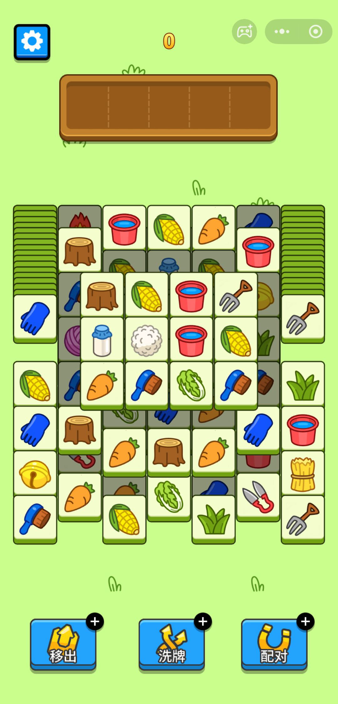
槽位、叠层棋盘和移出／洗牌／配对入口在同一画面中呈现。
查看大图 ↗素材的具体构建号与发布渠道未标注，不据此认定为当前全量线上版本。截图裁去顶部账号条，录屏节选与截帧裁去顶部账号及通知区，保留完整槽位、棋盘和底部道具；原片中的聊天分享与广告未公开。

录屏第 45 秒；查看操作结果如何通过粒子与连击提示反馈。
查看大图 ↗
录屏第 75 秒；将槽位中的待配对物与棋盘剩余可选项一起阅读。
查看大图 ↗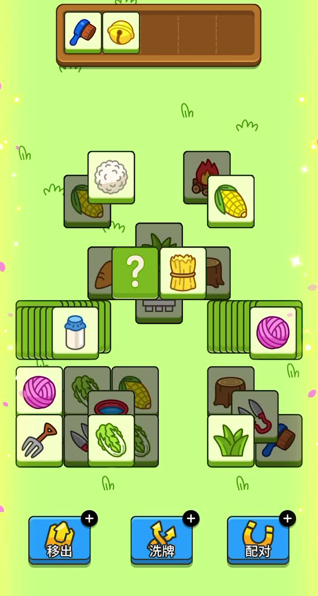
录屏第 105 秒；观察上层移走后操作范围的变化，不从截图推断全部特殊砖规则。
查看大图 ↗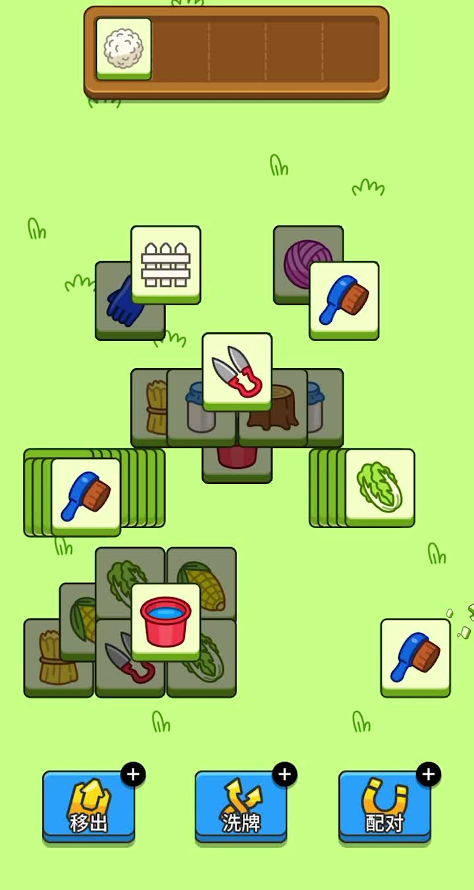
录屏第 160 秒；结构减少后，仍需兼顾当前配对与后续可操作砖。
查看大图 ↗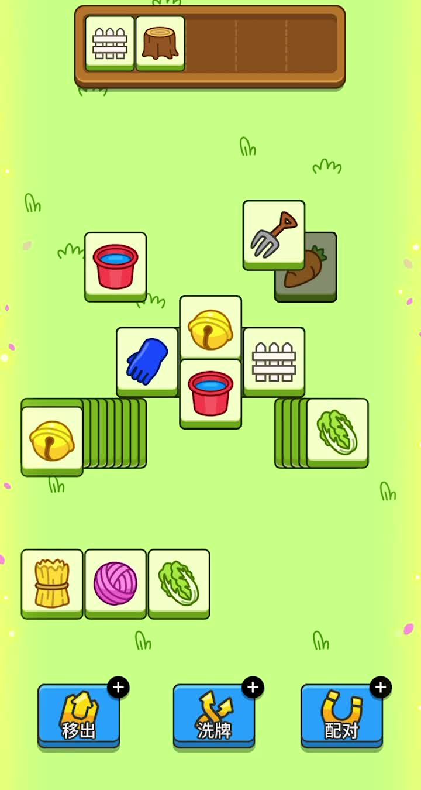
录屏第 205 秒；是操作过程，不作为最终通关截图。
查看大图 ↗与入槽玩法分开对照，重点看操作位置和风险呈现的变化；不将旧版动画当作新版已上线表现。
炸弹效果是预设方案，尚未上线。画面中的按钮和特效不作为正式功能交付证明。
用户于 2026-11-17 明确补充版本与炸弹状态。视频由用户提供 GIF 转码，原动图带有调速处理，不宣称是原速连续录屏；顶部标识已遮盖。
INTERFACE / PLAYER JOURNEY
早期界面方案 · 团队美术效果
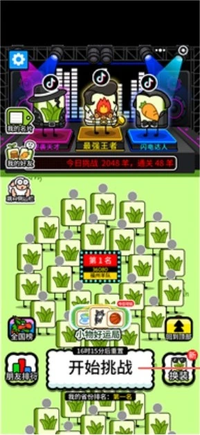
将挑战、角色展示和活动入口放在同一条玩家路径中。
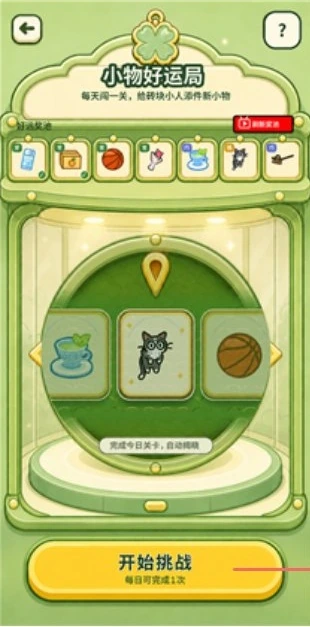
用候选奖励建立短期目标，连接关卡挑战与外观收集。
突出获得内容，区分挑战结算、奖励领取和回到活动的状态。
界面摘自已授权的小物好运局早期流程稿，不作为当前正式版实机；新版每日小物采用通关得券、主动抽奖。个人策划职责与团队美术执行分开说明。
MY WORK / DESIGN VALUE
职责及阶段成果由本人确认；第二关难度飞升模式为既定方向，不归为本人决策。个人原型、团队研发与当前测试结果分别说明。
职责依据本人履历与确认；原图补充设计证据，经营结果另行说明来源与口径。
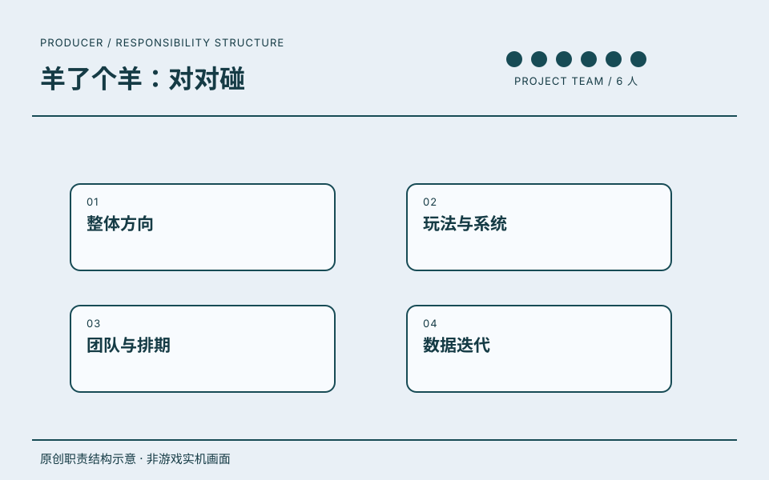
从零组队推进项目，独立使用 Codex 一周完成核心玩法与表现原型；负责玩法与系统、版本交付，推进微信和抖音上线及第二版测试。
项目团队共 6 人：制作人本人、2 名策划、1 名美术、2 名程序。正式版美术表现和发行运营由相应岗位承担；个人 AI 原型与团队正式交付分开说明。
《羊了个羊：对对碰》列于这段任职经历中。
任职、角色与职责依据本人履历及确认。图示是本站原创的职责结构表达。
LEVEL DESIGN / 验收与分析
不只看砖块数量或一个通关率：先检查关卡的可操作空间与变化，再结合人工挑战、反馈和验收状态，确定哪些位置需要调整与复验。
记录类型数量、层数、砖块量、最大连击数及投放顺序，关联关卡截图，避免只凭规模比较难度。
将挑战次数、是否通关、通过时长和理由反馈与“可上线／需要调整／已调整待验收”等状态关联，保留修改依据。
AB 表并列关卡图、V 曲线、不同道具条件的测算与卡点预测，并预留微信／抖音通关率和人均广告次数；待更新项不写成已有测试结果。
依据本次指定《关卡难度》表的“关卡验收”与“ABTest关卡”工作表整理；不公开成员姓名、完整配置及原始渠道报表。表内“可上线”是验收状态，不等同已全量发布。
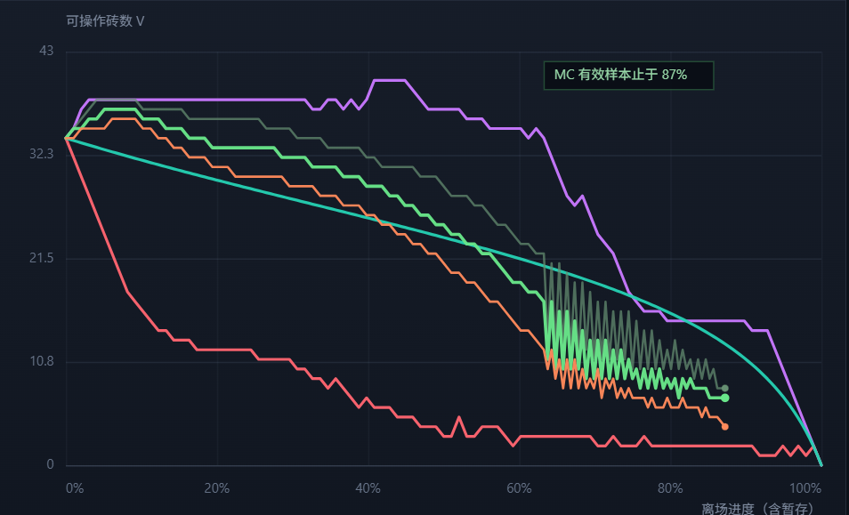
横轴为离场进度（含暂存），纵轴为可操作砖数 V。曲线用于定位阶段变化与人工复核位置；各颜色算法定义未随本图提供，不补写图例。
查看大图 ↗“MC 有效样本止于 87%”表示图中模拟有效样本的覆盖边界，不是 87% 胜率；不将样本外曲线视为已验证结果，也不据此保证关卡可解。用户所给 AB 表可见该类曲线与对应关卡图的关联。
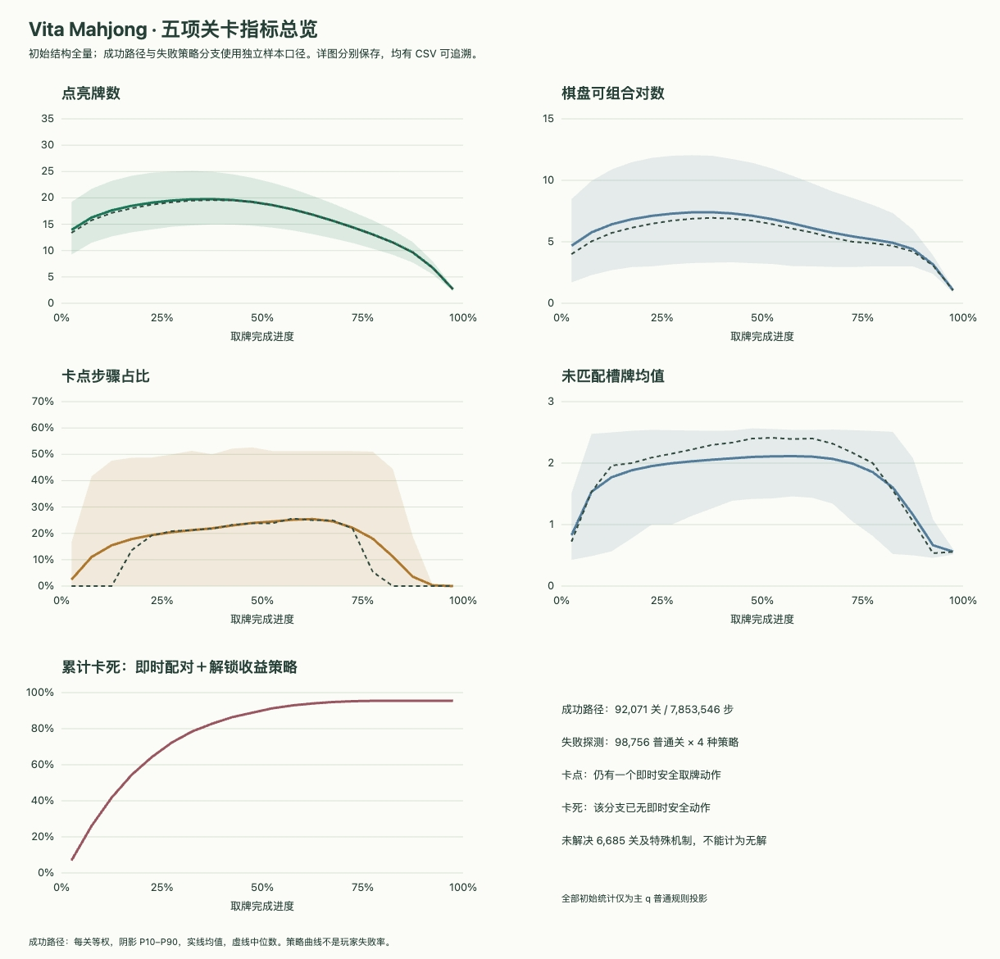
将点亮牌数、棋盘可组合对数、卡点步骤占比、未匹配槽牌与策略卡死分开观察，辅助理解不同阶段的选择空间与风险。
查看大图 ↗此图标题明确为 Vita Mahjong，不标为《对对碰》的线上数据。成功路径与失败策略分支使用不同样本口径；策略曲线不等于玩家真实失败率，未解决样本也不能直接归为无解。本轮未重新运行或独立审计图中统计。
RULES / FEEDBACK
指定画板精选 · 按设计问题展开
不只定义道具效果，也规定何时提示、提示持续多久、操作后如何退出提示。

保留画板对应的历史规则与分支，不将旧版道具流程标为第二版入槽配对的实机；改版判断与测试成果见下方案例。
DESIGN / DELIVERY
围绕本人已确认的制作人职责，阅读产品取舍、系统规则、关卡工具与版本交付的具体依据。
个人能力专题：AI 辅助研发与团队协作 ↗以下是项目资料支持的设计与交付案例，不将团队工作认定为个人独立成果。历史方案、待验收能力与版本表内发布记录分别说明，不以设计目标代替实测业绩。
怎样在有限研发资源下，确定优先做好的体验，而不是持续扩充功能？
把产品方向落为阶段范围、优先级与验收要求。不同日期的道具方案有变化，保留版本差异，不将早期规则当成当前最终规则。
来源：《羊了个羊：对对碰》立项策划案、关卡玩法。立项案包含 AI 辅助整理，范围按其对应阶段阅读。

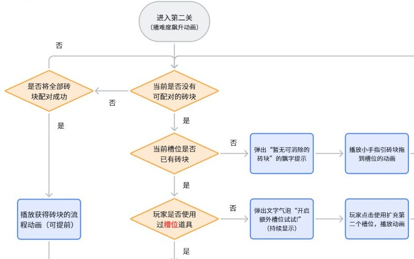
棋盘直接配对的失败判定，为什么与玩家感受到的节奏和难度不匹配？
本人确认：第二版测试后，次日留存和人均挑战次数明显提升。该结果为定性反馈，未提供对照周期和具体提升比例，不将同期其他变化排除后作单一因果结论。
来源：本人于 2026-11-16 确认改版决策及测试反馈；关卡玩法画板局部截图经本人授权展示。画板记录旧版与道具流程演进，不是第二版实机或统计报表。

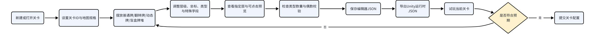
怎样让策划可调整关卡，同时避免编辑器和游戏运行结果不一致？
交付编辑流程、数据约束与游戏内一致性验收清单。偶数校验是基础检查，不等于保证可解；文档仍有待验收项，不宣称所有编辑器能力均已完成。
来源：麻将关卡编辑器系统策划需求文档。原图为设计流程，不是工具实机截图。
怎样在主玩法之外增加每日目标，同时让挑战进度和奖励消费互不干扰？
把资格、余额、候选池和发奖分别定义为状态，并提供前后端分工、配置与异常验收。通关率属于设计目标，不写成实测结果。
来源：【常驻玩法】每日小物。新版规则与下方早期“小物好运局”图分开阅读。

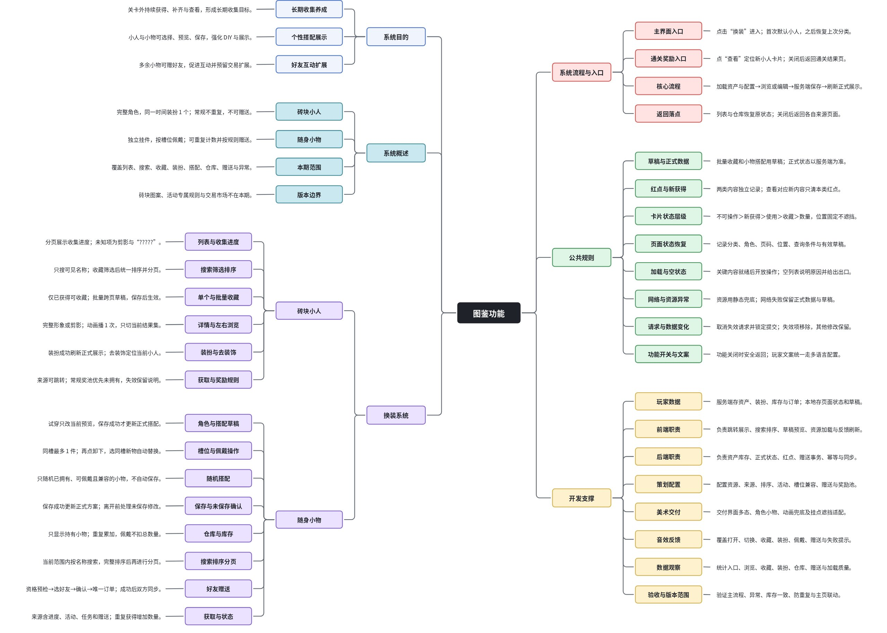

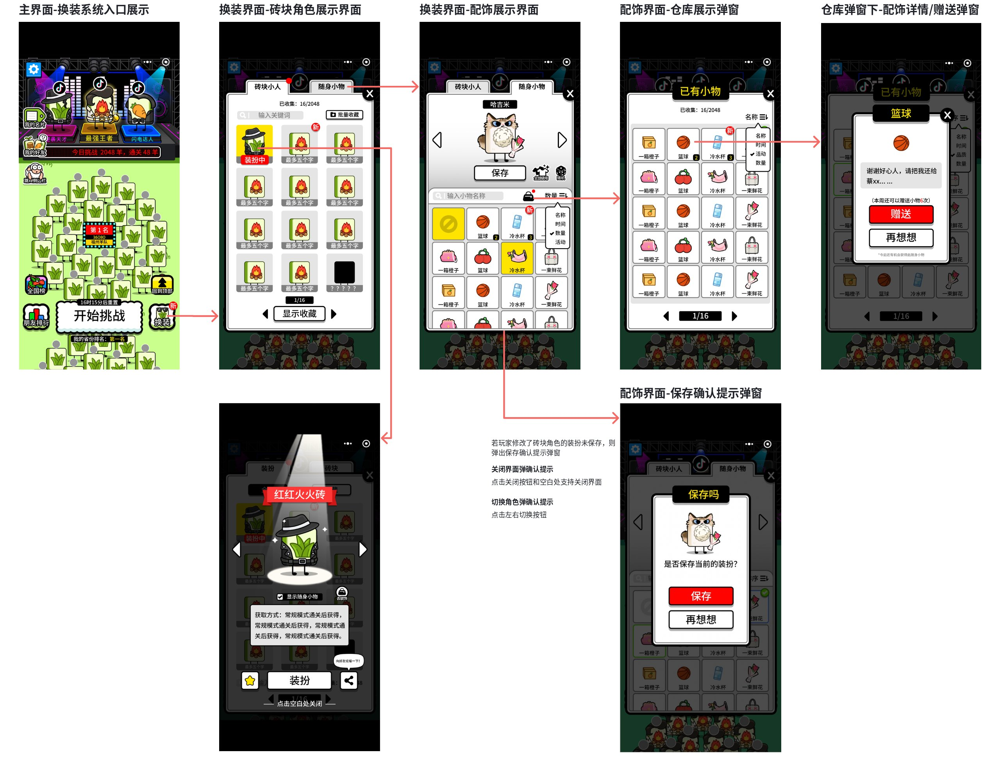
如何将关卡奖励接成长线目标，让重复获得的小物也有社交价值？
把收集动机、界面操作、资产边界与前后端验收串成完整系统；同时通过入口、浏览、装扮保存和赠送等埋点观察实际使用，不以设计目标代替留存成果。
设计预留 · 未确认上线
按用户 ID 的哈希结果将玩家稳定分为四类（A / B / C / D）。哈希用于分组，不直接决定抽奖结果；具体掉落仍由服务端按配置权重抽取。
为四类配置不同的小物掉落权重，形成“本组相对多、其他组相对少”的供给互补。借鉴集五福的集齐动机，让重复物成为可交换供给，缺失物形成需求。
区分群体间的相对稀缺与全市场总量稀缺；结合活跃人数、获得频次、奖励池、投放周期及回收规则调节供需，避免把四类差异做成永久绝版或无法补齐。
保留基础获取或保底补齐路径；设计赠送／交易资格、次数限制、库存校验与订单去重，防止多账号刷取。观察重复率、缺口、成交与收集完成率，再调整权重。
以上为本人补充的市场设计方向，不代表交易功能已开发或上线；具体概率、交易媒介、定价与回收规则尚未披露，也不作真实货币收益承诺。
来源：《图鉴功能文档》设计目的、系统导图、系统流程与埋点章节；市场方向由本人补充。资料有多位修订者，界面美术为团队成果；不据文档归档认定个人独立完成全部设计，也不将各子功能一概写成上线成果。

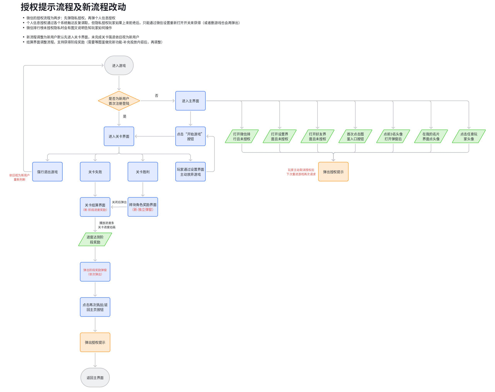
怎样先让玩家体验玩法，再在需要的入口请求授权，并处理拒绝后的去向？
将授权成功、拒绝、设置引导与原操作恢复落实为入口矩阵和验收场景。图中的阶段奖励有其他系统依赖，不据流程图宣称已经全部接入。
来源：游戏登录与微信授权流程。展示的是该版本设计，不作为当前微信平台合规结论。
怎样把活动玩法、收集结算和兑换做成团队可以分工交付的完整链路？
提供状态规则、异常用例、资源接入与依赖顺序。体现跨职能交付设计，不把团队美术、代码或所有配置归为个人执行。
来源：【双节活动】好事成双月饼兑换策划开发案。版本表提供活动发布记录，具体方案细节仍需对应版本验收。
怎样将需求、缺陷和发布范围关联起来，避免“提测”被写成“上线”？
用版本记录支撑交付和问题迭代，结合点击拖拽、资源刷新、层级、前后台恢复等修复案例说明验收重点。发布记录不证明经营增长或本人独立完成全部任务。
来源：羊了个羊对对碰版本更新记录。上述为用户提供表内记载，未现场核验生产服务器。
完整原件、内部任务编号、成员信息、精确概率与经济配置不公开；流程图保留原始像素，团队美术与程序实现不扩大为个人职责。
PROJECT DESIGN / 项目设计资料
关卡规则、逻辑判定与早期界面流程。
我的角色是游戏制作人，工作范围包括整体方向、玩法与系统、团队与排期、数据迭代。下列资料用于展开项目设计讨论；美术执行由团队相应岗位承担。

把教学、核心挑战、配对规则与胜负结算组织为可执行的关卡流程。
大图可横向与纵向滚动。键盘进入图区后可用方向键移动；手机可滑动，或打开原图缩放。

早期方案保留作迭代对照；新版每日小物采用通关得券、主动抽奖。
大图可横向与纵向滚动。键盘进入图区后可用方向键移动；手机可滑动，或打开原图缩放。
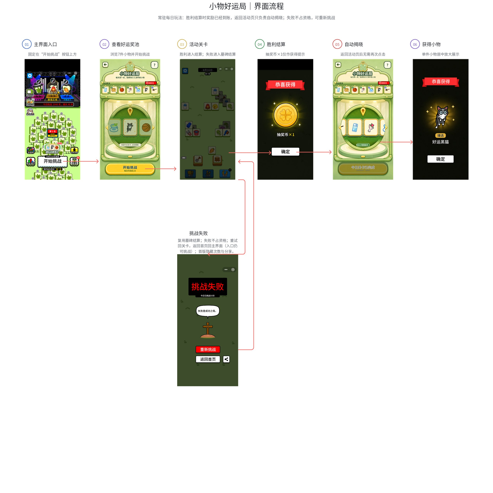
资料类型：项目设计图。图中展示设计方案，不代表全部已上线，也不构成经营成果证明；资料不用于认定个人独立完成范围。
PROJECT NOTES / 公开职责摘要
围绕已确认的职责整理。
每篇都有图示与独立阅读页面。